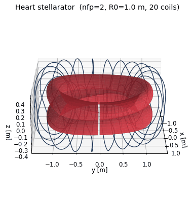
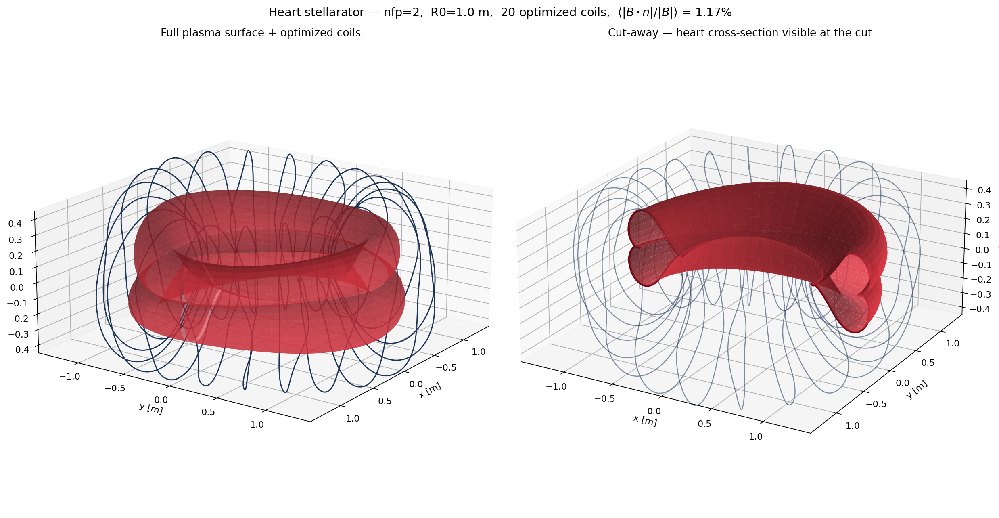
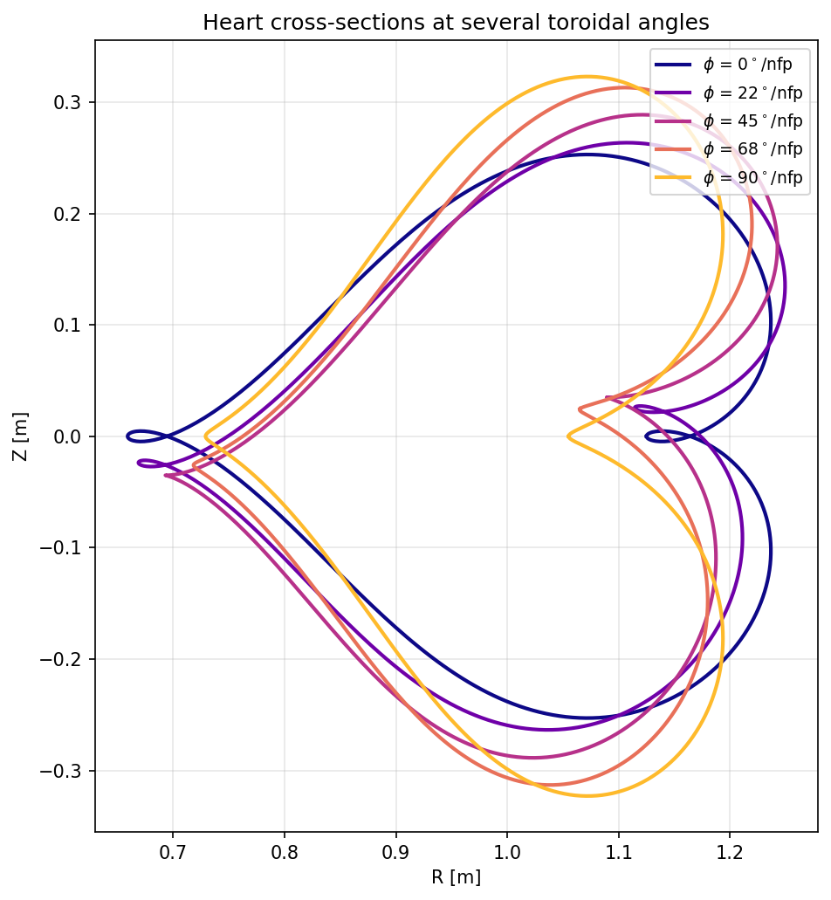

Result

The idea
The classical parametric heart curve
y(t) = 13 cos t − 5 cos 2t − 2 cos 3t − cos 4t
is already a finite Fourier series. Rotated 90° so the symmetry axis lies on the equatorial plane, it drops straight into a SurfaceRZFourier with no fitting — five Rm,0 modes and two Zm,0 modes describe the shape exactly. A small n=1 modulation adds the toroidal twist that turns this from a heart-tokamak into a real, non-axisymmetric stellarator.


n=1 twist rotates and deforms it.Key code
1 — Heart cross-section as a Fourier surface
Coefficients come directly from the heart-curve harmonics; the last two lines add the toroidal twist.
def build_heart_surface(nfp=2, R0=1.0, A=0.018, twist=0.035,
nphi=48, ntheta=48):
s = SurfaceRZFourier(
nfp=nfp, stellsym=True, mpol=5, ntor=2,
quadpoints_phi=np.linspace(0, 1.0 / nfp, nphi, endpoint=False),
quadpoints_theta=np.linspace(0, 1.0, ntheta, endpoint=False),
)
s.set_rc(0, 0, R0)
s.set_rc(1, 0, A * 13.0)
s.set_rc(2, 0, -A * 5.0)
s.set_rc(3, 0, -A * 2.0)
s.set_rc(4, 0, -A * 1.0)
s.set_zs(1, 0, A * 12.0)
s.set_zs(3, 0, -A * 4.0)
s.set_rc(1, 1, twist) # n=1 modulation — turns heart-tokamak
s.set_zs(1, 1, -twist) # into a real stellarator
return s2 — Coil optimization (L-BFGS-B against the surface)
Squared normal-flux objective plus regularizers on coil length, curvature, arclength variation, and coil-coil distance.
base_curves = create_equally_spaced_curves(
ncoils, s.nfp, stellsym=True, R0=R0, R1=R1, order=order)
base_currents = [Current(current) for _ in range(ncoils)]
base_currents[0].fix_all()
coils = coils_via_symmetries(base_curves, base_currents, s.nfp, True)
bs = BiotSavart(coils)
bs.set_points(s.gamma().reshape((-1, 3)))
Jf = SquaredFlux(s, bs)
Jls = [CurveLength(c) for c in base_curves]
Jcs = sum(LpCurveCurvature(c, p=2, threshold=25.0) for c in base_curves)
Jmsc = sum(MeanSquaredCurvature(c) for c in base_curves)
Jarc = sum(ArclengthVariation(c) for c in base_curves)
Jdist = CurveCurveDistance(base_curves, 0.12)
JF = (Jf
+ 5e-4 * sum(QuadraticPenalty(Jl, 3.0, "max") for Jl in Jls)
+ 1e-7 * Jcs + 1e-8 * Jmsc + 1e-4 * Jarc + 5e-2 * Jdist)
res = minimize(fun, JF.x, jac=True, method="L-BFGS-B",
options={"maxiter": 800, "maxcor": 300,
"gtol": 1e-12, "ftol": 1e-14})3 — Run it
# build once, then:
docker compose run --rm heart # static plots
docker compose run --rm heart-gif # also write the rotating GIFHow it's built
heart_stellarator.py— designs the heart surface, optimizes coils, renders plots (and the GIF with--gif)Dockerfile— Debian-slim + C++ toolchain (gcc / cmake / ninja); SIMSOPT built from sourcedocker-compose.yml— two services (heart,heart-gif); working directory bind-mounted so outputs land on the host
simsopt is compiled from source (the PyPI aarch64 wheel uses CPU extensions Colima's VM doesn't expose); pybind11 is pinned <3 so the vendored xtensor compiles.